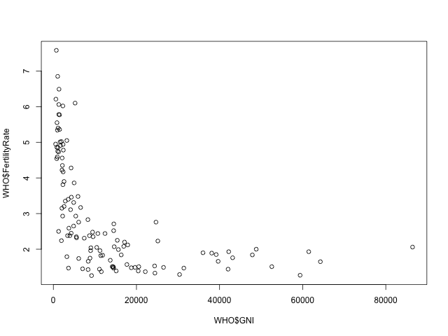
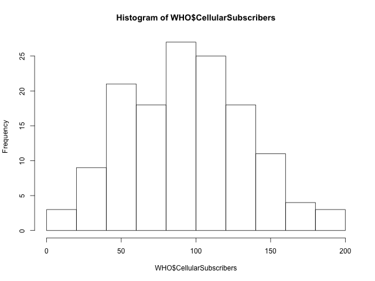
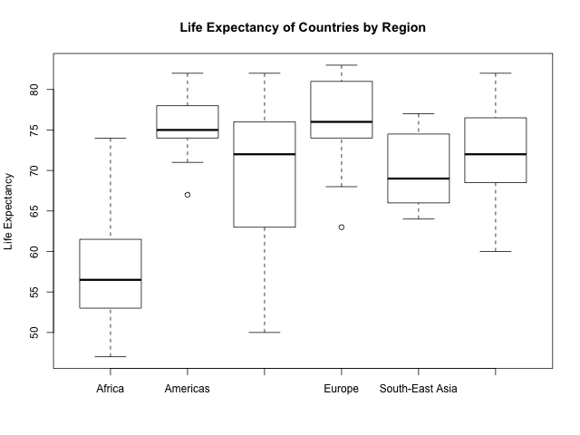
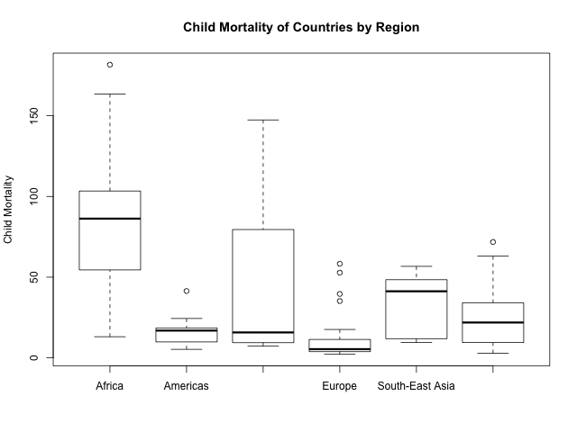

Working with data: An introduction to R
Table of Contents
This is a kindly introduction to R and their syntax. For the course "MITx: 15.071x The Analytics Edge".
1 Working with data: An introduction to R
The main idea of literacy programming is the capability of reproducibility.
1.1 Loading the data
In this part we can download the data
rm(list = ls()) # Remove all workspace data library(parallel) if(!file.exists("../data")) { dir.create("../data") } fileUrl <- "https://courses.edx.org/asset-v1:MITx+15.071x_2a+2T2015+type@asset+block/WHO.csv" fileName <- "WHO.csv" dataPath <- "../data" filePath <- paste(dataPath, fileName, sep = "/") if(!file.exists(filePath)) { download.file(fileUrl, destfile = filePath, method = "curl") list.files("../data") dateDownloaded <- date() }
1.2 Exploratory data analysis
Then we can work with the data file loading the data
writeLines(" Loading data into WHO dataframe") WHO <- read.table(filePath, sep = ",", header = TRUE) writeLines(" Initial analysis of data WHO") str(WHO) writeLines(" Summary data of the WHO dataframe") summary(WHO) writeLines(" Names of the dataframe") names(WHO) writeLines(" Class of the data set in memory") class(WHO) writeLines(" Dimension of the dataframe") dim(WHO) writeLines(" Head of the DF") head(WHO) writeLines(" Any NA in the dataframe") anyNA(WHO)
Loading data into WHO dataframe
Initial analysis of data WHO
'data.frame': 148 obs. of 13 variables:
$ Country : Factor w/ 148 levels "Afghanistan",..: 1 2 3 4 5 6 7 8 9 10 ...
$ Region : Factor w/ 6 levels "Africa","Americas",..: 3 4 1 4 1 2 2 4 6 4 ...
$ Population : int 29825 3162 38482 78 20821 89 41087 2969 23050 8464 ...
$ Under15 : num 47.4 21.3 27.4 15.2 47.6 ...
$ Over60 : num 3.82 14.93 7.17 22.86 3.84 ...
$ FertilityRate : num 5.4 1.75 2.83 NA 6.1 2.12 2.2 1.74 1.89 1.44 ...
$ LifeExpectancy : int 60 74 73 82 51 75 76 71 82 81 ...
$ ChildMortality : num 98.5 16.7 20 3.2 163.5 ...
$ CellularSubscribers : num 54.3 96.4 99 75.5 48.4 ...
$ LiteracyRate : num NA NA NA NA 70.1 99 97.8 99.6 NA NA ...
$ GNI : num 1140 8820 8310 NA 5230 ...
$ PrimarySchoolEnrollmentMale : num NA NA 98.2 78.4 93.1 91.1 NA NA 96.9 NA ...
$ PrimarySchoolEnrollmentFemale: num NA NA 96.4 79.4 78.2 84.5 NA NA 97.5 NA ...
Summary data of the WHO dataframe
Country Region Population
Afghanistan : 1 Africa :36 Min. : 1
Albania : 1 Americas :25 1st Qu.: 1332
Algeria : 1 Eastern Mediterranean:16 Median : 7638
Andorra : 1 Europe :39 Mean : 31182
Angola : 1 South-East Asia : 8 3rd Qu.: 22483
Antigua and Barbuda: 1 Western Pacific :24 Max. :1390000
(Other) :142
Under15 Over60 FertilityRate LifeExpectancy
Min. :13.28 Min. : 0.810 Min. :1.260 Min. :47.00
1st Qu.:18.42 1st Qu.: 5.152 1st Qu.:1.768 1st Qu.:64.00
Median :27.94 Median : 8.640 Median :2.335 Median :73.00
Mean :28.55 Mean :11.025 Mean :2.927 Mean :69.97
3rd Qu.:37.50 3rd Qu.:16.770 3rd Qu.:3.890 3rd Qu.:76.25
Max. :49.99 Max. :26.970 Max. :7.580 Max. :83.00
NA's :10
ChildMortality CellularSubscribers LiteracyRate GNI
Min. : 2.200 Min. : 2.57 Min. :31.10 Min. : 540
1st Qu.: 8.475 1st Qu.: 62.39 1st Qu.:72.20 1st Qu.: 2335
Median : 17.850 Median : 96.39 Median :92.30 Median : 8335
Mean : 36.267 Mean : 93.68 Mean :84.25 Mean :13269
3rd Qu.: 54.250 3rd Qu.:121.75 3rd Qu.:97.90 3rd Qu.:16435
Max. :181.600 Max. :196.41 Max. :99.80 Max. :86440
NA's :9 NA's :69 NA's :26
PrimarySchoolEnrollmentMale PrimarySchoolEnrollmentFemale
Min. : 60.10 Min. :52.00
1st Qu.: 88.30 1st Qu.:87.40
Median : 94.60 Median :94.40
Mean : 91.56 Mean :90.28
3rd Qu.: 98.10 3rd Qu.:97.50
Max. :100.00 Max. :99.90
NA's :71 NA's :71
Names of the dataframe
[1] "Country" "Region"
[3] "Population" "Under15"
[5] "Over60" "FertilityRate"
[7] "LifeExpectancy" "ChildMortality"
[9] "CellularSubscribers" "LiteracyRate"
[11] "GNI" "PrimarySchoolEnrollmentMale"
[13] "PrimarySchoolEnrollmentFemale"
Class of the data set in memory
[1] "data.frame"
Dimension of the dataframe
[1] 148 13
Head of the DF
Country Region Population Under15 Over60
1 Afghanistan Eastern Mediterranean 29825 47.42 3.82
2 Albania Europe 3162 21.33 14.93
3 Algeria Africa 38482 27.42 7.17
4 Andorra Europe 78 15.20 22.86
5 Angola Africa 20821 47.58 3.84
6 Antigua and Barbuda Americas 89 25.96 12.35
FertilityRate LifeExpectancy ChildMortality CellularSubscribers LiteracyRate
1 5.40 60 98.5 54.26 NA
2 1.75 74 16.7 96.39 NA
3 2.83 73 20.0 98.99 NA
4 NA 82 3.2 75.49 NA
5 6.10 51 163.5 48.38 70.1
6 2.12 75 9.9 196.41 99.0
GNI PrimarySchoolEnrollmentMale PrimarySchoolEnrollmentFemale
1 1140 NA NA
2 8820 NA NA
3 8310 98.2 96.4
4 NA 78.4 79.4
5 5230 93.1 78.2
6 17900 91.1 84.5
Any NA in the dataframe
[1] TRUE
1.3 Some subsetting
We can find the numbers for Mexico
WHO_Mexico <- subset(WHO, Country == "Mexico") str(WHO_Mexico)
'data.frame': 1 obs. of 13 variables: $ Country : Factor w/ 148 levels "Afghanistan",..: 64 $ Region : Factor w/ 6 levels "Africa","Americas",..: 2 $ Population : int 121000 $ Under15 : num 29 $ Over60 : num 9.18 $ FertilityRate : num 2.25 $ LifeExpectancy : int 75 $ ChildMortality : num 16.2 $ CellularSubscribers : num 82.4 $ LiteracyRate : num 93.1 $ GNI : num 15390 $ PrimarySchoolEnrollmentMale : num 99.2 $ PrimarySchoolEnrollmentFemale: num 99.9
Other example is select all the countries in Europe
WHO_Europe <- subset(WHO, Region = "Europe") str(WHO_Europe) summary(WHO_Europe)
'data.frame': 148 obs. of 13 variables:
$ Country : Factor w/ 148 levels "Afghanistan",..: 1 2 3 4 5 6 7 8 9 10 ...
$ Region : Factor w/ 6 levels "Africa","Americas",..: 3 4 1 4 1 2 2 4 6 4 ...
$ Population : int 29825 3162 38482 78 20821 89 41087 2969 23050 8464 ...
$ Under15 : num 47.4 21.3 27.4 15.2 47.6 ...
$ Over60 : num 3.82 14.93 7.17 22.86 3.84 ...
$ FertilityRate : num 5.4 1.75 2.83 NA 6.1 2.12 2.2 1.74 1.89 1.44 ...
$ LifeExpectancy : int 60 74 73 82 51 75 76 71 82 81 ...
$ ChildMortality : num 98.5 16.7 20 3.2 163.5 ...
$ CellularSubscribers : num 54.3 96.4 99 75.5 48.4 ...
$ LiteracyRate : num NA NA NA NA 70.1 99 97.8 99.6 NA NA ...
$ GNI : num 1140 8820 8310 NA 5230 ...
$ PrimarySchoolEnrollmentMale : num NA NA 98.2 78.4 93.1 91.1 NA NA 96.9 NA ...
$ PrimarySchoolEnrollmentFemale: num NA NA 96.4 79.4 78.2 84.5 NA NA 97.5 NA ...
Country Region Population
Afghanistan : 1 Africa :36 Min. : 1
Albania : 1 Americas :25 1st Qu.: 1332
Algeria : 1 Eastern Mediterranean:16 Median : 7638
Andorra : 1 Europe :39 Mean : 31182
Angola : 1 South-East Asia : 8 3rd Qu.: 22483
Antigua and Barbuda: 1 Western Pacific :24 Max. :1390000
(Other) :142
Under15 Over60 FertilityRate LifeExpectancy
Min. :13.28 Min. : 0.810 Min. :1.260 Min. :47.00
1st Qu.:18.42 1st Qu.: 5.152 1st Qu.:1.768 1st Qu.:64.00
Median :27.94 Median : 8.640 Median :2.335 Median :73.00
Mean :28.55 Mean :11.025 Mean :2.927 Mean :69.97
3rd Qu.:37.50 3rd Qu.:16.770 3rd Qu.:3.890 3rd Qu.:76.25
Max. :49.99 Max. :26.970 Max. :7.580 Max. :83.00
NA's :10
ChildMortality CellularSubscribers LiteracyRate GNI
Min. : 2.200 Min. : 2.57 Min. :31.10 Min. : 540
1st Qu.: 8.475 1st Qu.: 62.39 1st Qu.:72.20 1st Qu.: 2335
Median : 17.850 Median : 96.39 Median :92.30 Median : 8335
Mean : 36.267 Mean : 93.68 Mean :84.25 Mean :13269
3rd Qu.: 54.250 3rd Qu.:121.75 3rd Qu.:97.90 3rd Qu.:16435
Max. :181.600 Max. :196.41 Max. :99.80 Max. :86440
NA's :9 NA's :69 NA's :26
PrimarySchoolEnrollmentMale PrimarySchoolEnrollmentFemale
Min. : 60.10 Min. :52.00
1st Qu.: 88.30 1st Qu.:87.40
Median : 94.60 Median :94.40
Mean : 91.56 Mean :90.28
3rd Qu.: 98.10 3rd Qu.:97.50
Max. :100.00 Max. :99.90
NA's :71 NA's :71
1.4 Write a data frame in a CSV file
We can export to a csv file our subset
write.csv(WHO_Europe, "../data/WHO_Europe.csv")
rm(WHO_Europe)
1.5 Data Analysis - Summary Statistics And Scatter plots
writeLines(" Selecting a variable") WHO$Under15 writeLines("\n Calculating the Mean of the variable Under15") mean(WHO$Under15) writeLines("\n Calculating the Standard Deviation of Under15") sd(WHO$Under15) writeLines("\n Summary of the Under15 variable") summary(WHO$Under15)
Selecting a variable
[1] 47.42 21.33 27.42 15.20 47.58 25.96 24.42 20.34 18.95 14.51 22.25 21.62
[13] 20.16 30.57 18.99 15.10 16.88 34.40 42.95 28.53 35.23 16.35 33.75 24.56
[25] 25.75 13.53 45.66 44.20 31.23 43.08 16.37 30.17 40.07 48.52 21.38 17.95
[37] 28.03 42.17 42.37 30.61 23.94 41.48 14.98 16.58 17.16 14.56 35.61 14.57
[49] 21.64 36.75 43.06 29.45 15.13 17.46 42.72 45.44 26.65 29.03 47.14 14.98
[61] 30.10 40.22 20.17 29.02 35.81 18.26 27.05 19.01 27.85 45.38 25.28 36.59
[73] 30.10 35.58 17.21 20.26 33.37 49.99 44.23 30.61 18.64 24.19 34.31 30.10
[85] 28.65 38.37 32.78 29.18 34.53 14.91 14.92 13.28 15.25 16.52 15.05 15.45
[97] 43.56 25.96 24.31 25.70 37.88 14.04 41.60 29.69 43.54 16.45 21.95 41.74
[109] 16.48 15.00 14.16 40.37 47.35 29.53 42.28 15.20 25.15 41.48 27.83 38.05
[121] 16.71 14.79 35.35 35.75 18.47 16.89 46.33 41.89 37.33 20.73 23.22 26.00
[133] 28.65 30.61 48.54 14.18 14.41 17.54 44.85 19.63 22.05 28.90 37.37 28.84
[145] 22.87 40.72 46.73 40.24
Calculating the Mean of the variable Under15
[1] 28.5473
Calculating the Standard Deviation of Under15
[1] 10.77816
Summary of the Under15 variable
Min. 1st Qu. Median Mean 3rd Qu. Max.
13.28 18.42 27.94 28.55 37.50 49.99
Now we can see that a country which have only \(13.28\%\) of population under \(15\) years, then very low young people set is living in such country.
minUnder15Country <- WHO[which.min(WHO$Under15), ]
minUnder15Country$Country
[1] Qatar 148 Levels: Afghanistan Albania Algeria Andorra Angola ... Zimbabwe
Now, who is the country with maximum population under 15 years
maxUnder15Country <- WHO[which.max(WHO$Under15), ]
maxUnder15Country$Country
[1] Niger 148 Levels: Afghanistan Albania Algeria Andorra Angola ... Zimbabwe
1.5.1 Plotting some variables

Figure 1: Exploratory Data Analysis of WHO.
We can see that in general for greater GNI countries the fertility rate is low but some big GNI countries have significant fertility rate. Lets investigate this phenomena.
Outliers <- subset(WHO, GNI > 10000 & FertilityRate > 2.5) writeLines(" Number of countries with GNI >10000 and Fertilityrate > 2.5") nrow(Outliers) writeLines(" Interested data for the Outliers DF") Outliers[c("Country", "GNI", "FertilityRate")]
Number of countries with GNI >10000 and Fertilityrate > 2.5
[1] 3
Interested data for the Outliers DF
Country GNI FertilityRate
23 Botswana 14550 2.71
85 Panama 14510 2.52
104 Saudi Arabia 24700 2.76
1.5.2 Questions
Please answer the following questions using the entire data frame WHO (and not one of the subsets we have created in R).
1.5.2.1 Question 1
What is the mean value of the "Over60" variable?
mean(WHO$Over60, na.rm = TRUE)
[1] 11.025
1.5.2.2 Question 2
Which country has the smallest percentage of the population over 60?
writeLines(" Summary for WHO DF") summary(WHO) writeLines("\n Answer") minOver60Country <- WHO[which.min(WHO$Over60), ] minOver60Country$Country
Summary for WHO DF
Country Region Population
Afghanistan : 1 Africa :36 Min. : 1
Albania : 1 Americas :25 1st Qu.: 1332
Algeria : 1 Eastern Mediterranean:16 Median : 7638
Andorra : 1 Europe :39 Mean : 31182
Angola : 1 South-East Asia : 8 3rd Qu.: 22483
Antigua and Barbuda: 1 Western Pacific :24 Max. :1390000
(Other) :142
Under15 Over60 FertilityRate LifeExpectancy
Min. :13.28 Min. : 0.810 Min. :1.260 Min. :47.00
1st Qu.:18.42 1st Qu.: 5.152 1st Qu.:1.768 1st Qu.:64.00
Median :27.94 Median : 8.640 Median :2.335 Median :73.00
Mean :28.55 Mean :11.025 Mean :2.927 Mean :69.97
3rd Qu.:37.50 3rd Qu.:16.770 3rd Qu.:3.890 3rd Qu.:76.25
Max. :49.99 Max. :26.970 Max. :7.580 Max. :83.00
NA's :10
ChildMortality CellularSubscribers LiteracyRate GNI
Min. : 2.200 Min. : 2.57 Min. :31.10 Min. : 540
1st Qu.: 8.475 1st Qu.: 62.39 1st Qu.:72.20 1st Qu.: 2335
Median : 17.850 Median : 96.39 Median :92.30 Median : 8335
Mean : 36.267 Mean : 93.68 Mean :84.25 Mean :13269
3rd Qu.: 54.250 3rd Qu.:121.75 3rd Qu.:97.90 3rd Qu.:16435
Max. :181.600 Max. :196.41 Max. :99.80 Max. :86440
NA's :9 NA's :69 NA's :26
PrimarySchoolEnrollmentMale PrimarySchoolEnrollmentFemale
Min. : 60.10 Min. :52.00
1st Qu.: 88.30 1st Qu.:87.40
Median : 94.60 Median :94.40
Mean : 91.56 Mean :90.28
3rd Qu.: 98.10 3rd Qu.:97.50
Max. :100.00 Max. :99.90
NA's :71 NA's :71
Answer
[1] United Arab Emirates
148 Levels: Afghanistan Albania Algeria Andorra Angola ... Zimbabwe
1.5.2.3 Question 3
writeLines("\n Answer") maxLR <- WHO[which.max(WHO$LiteracyRate), ] maxLR$Country
Answer
[1] Cuba
148 Levels: Afghanistan Albania Algeria Andorra Angola ... Zimbabwe
1.6 Data Analysis - Plots and Summary Tables
In this part we can see that we can use the plots and summaries to build a deep understanding of the data sets.
1.6.1 Histograms
Les proceed to plot an histogram of the data set WHO.

Figure 2: Exploratory Data Analysis of WHO.
1.6.2 Box Plot
We can plot the LifeExpectancy variable by region with a box plot.

Figure 3: Exploratory Data Analysis of WHO.
This box plot shows how life expectancy in countries varies according to the region the country is in. The box for each region shows the range between the first and third quartiles with the middle line marking the median value.
The dashed lines at the top and bottom of the box, often called whiskers, show the range from the minimum to maximum values, excluding any outliers, which are plotted as circles.
Outliers are defined by first computing the difference between the first and third quartiles, or the height of the box.
This number is called the inter-quartile range. Any point that is greater than the third quartile plus the inter-quartile range, or any point that is less than the first quartile minus the inter-quartile range is considered an outlier.
This box plot shows us that Europe has the highest median life expectancy, the Americas has the smallest inter-quartile range, and the eastern Mediterranean region has the highest overall range of life expectancy values.
1.6.3 Summary tables
table(WHO$Region)
Africa Americas Eastern Mediterranean
36 25 16
Europe South-East Asia Western Pacific
39 8 24
You can see some nice information about numerical variables by using the tapply function. Let's start by looking at an example.
tapply(WHO$Over60, WHO$Region, mean)
Africa Americas Eastern Mediterranean 5.315833 11.892400 5.449375 Europe South-East Asia Western Pacific 19.559231 8.470000 9.385833
This splits the observations by Region and then computes the mean of the variable Over60. So tapply splits the data by the second argument you give, and then applies the third argument function to the variable given as the first argument.
This result tells us that the average percentage of the population over 60 in African countries is about \(5\%\), while the average percentage of the population over 60 in European countries is about \(20\%\).
tapply(WHO$LiteracyRate, WHO$Region, min)
Africa Americas Eastern Mediterranean
NA NA NA
Europe South-East Asia Western Pacific
NA NA NA
We have the value NA for all of the regions. This is because we have some missing values in our data for literacy rate.
tapply(WHO$LiteracyRate, WHO$Region, min, na.rm = TRUE)
Africa Americas Eastern Mediterranean 31.1 93.1 63.9 Europe South-East Asia Western Pacific 95.2 56.8 60.6
This removes all of the countries that are missing a value for LiteracyRate before doing the computation.
This time we see numerical values, as we expect. So we've split the data by Region again and computed the minimum value of LiteracyRate for all countries with a value in the LiteracyRate variable.
By using some basic functions in R, plots, and summary tables we were able to get a better understanding of our data.
1.6.4 Questions
Use the tapply function to find the average child mortality rate of countries in each region.
1.6.4.1 Question 1
Which region has the lowest average child mortality rate across all countries in that region?
1.6.4.1.1 Answer

Figure 4: Exploratory Data Analysis of WHO in Child Mortality
Calculating the lowest average child mortality by region.
tapply(WHO$ChildMortality, WHO$Region, mean, na.rm = TRUE)
Africa Americas Eastern Mediterranean 83.04167 16.05600 43.84375 Europe South-East Asia Western Pacific 10.86667 33.67500 24.24583
Then Europe have the lowest average child mortality by region.
2 Recitation 1 - Understanding food: Nutritional Education with data
2.1 The Importance of Food and Nutrition
Good nutrition is an important part of leading a healthy lifestyle.
Malnutrition can result in obesity, which has been rising at an alarming rate. In the US for instance, while all states in 1990 had less than \(14\%\) obesity, figures started increasing.
And by 2000, half of the country has more than \(20\%\) of its population obese. The trend continues. And in 2010, all states have at least more than \(20\%\) of their population obese.
Many states across the country reached an alarming situation. More than \(35\%\) of American adults are obese. The trends Worldwide are no different.
Obesity has nearly doubled across the globe. Obesity is one of today's blatantly visible public health problems, and increases people's risk to heart disease, stroke, and diabetes.
In fact \(65\%\) of the world's population lives in countries where obesity kills more people than underweight. So good nutrition is essential for an overall healthy lifestyle and promoting it now is more important than ever.
We have access to hundreds of nutrition and weight loss applications, and around \(15\%\) of adults with cell phones use health applications on their devices.
These apps are mostly powered by the United States Department of Agricultural, or USDA, food database.
The United States Department of Agricultural distributes nutritional information of over \(7,000\) food items including amount of calories, carbs, protein, fat, and sodium, among other nutrients.
L** Loading data set
https://courses.edx.org/asset-v1:MITx+15.071x_2a+2T2015+type@asset+block/USDA.csv